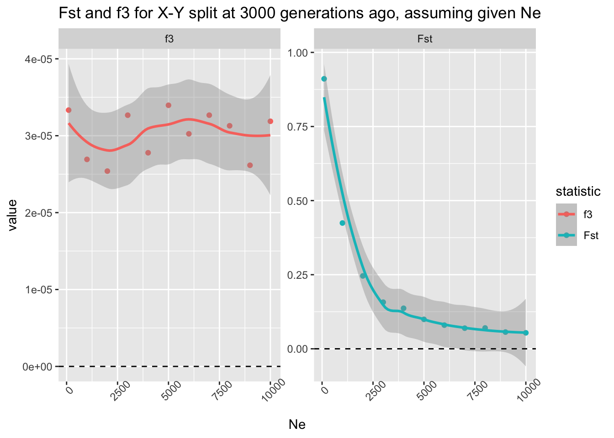
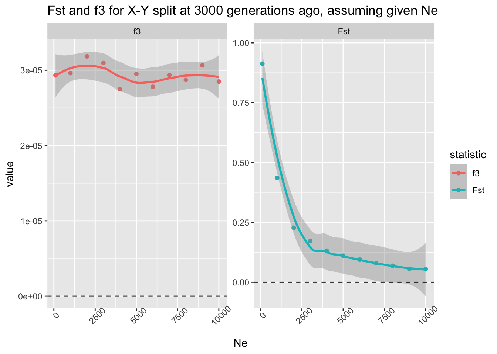
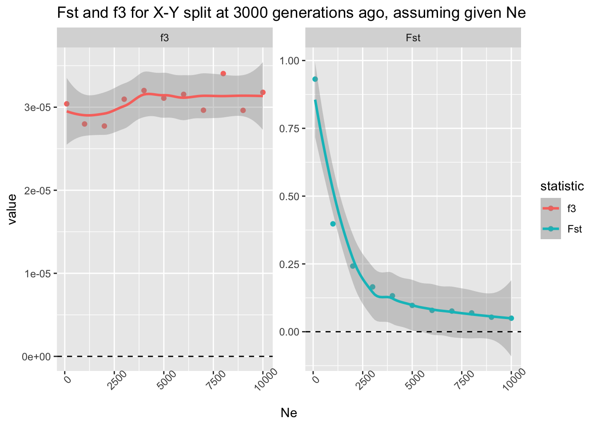
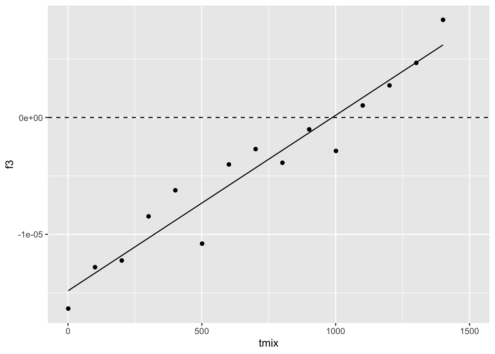
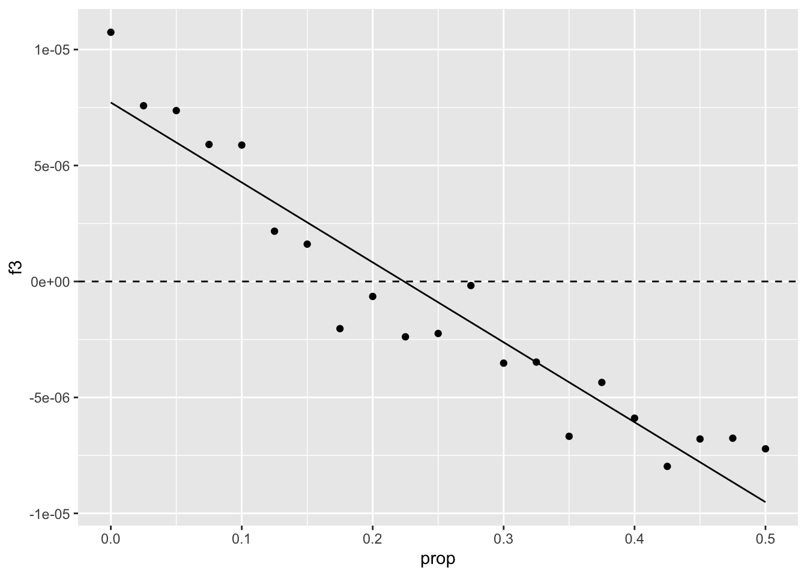
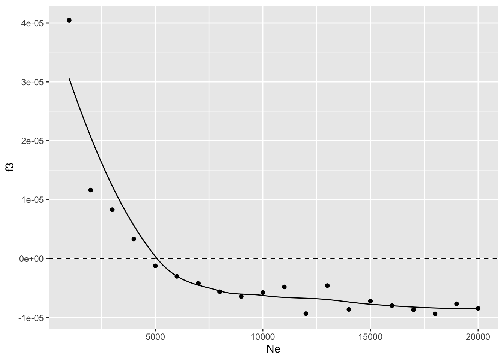
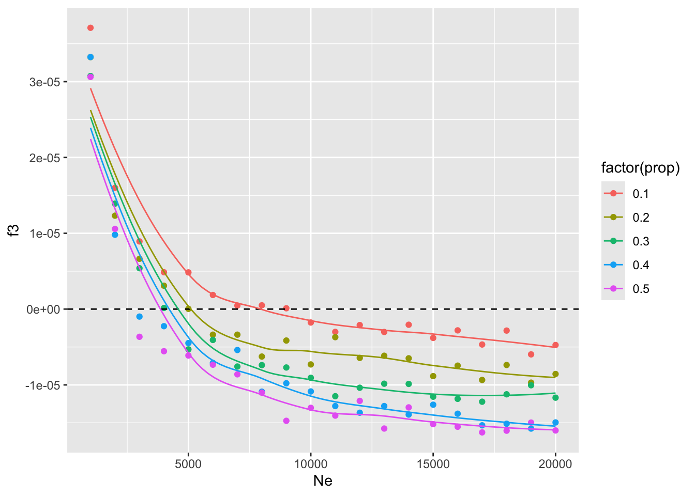

In the previous session, you learned to compute within-group summary statistics by providing slendr functions single vectors of individual names, most easily obtained by the function ts_names() in a very straightforward way.
Whenever we work with “between-group statistics” (i.e., statistics based on comparing genomic variation between different groupings of individuals), we need to be aware of some of the ways of how R works with lists and vectors.
Let’s first set up a small model to demonstrate this.
Start by creating a new R script called slendr-multipop.R and program the following model in it, simulating a tree sequence object ts (sequence length 10Mb, recombination rate 1e-8, mutation rate 1e-8). In this tree sequence, schedule the recording of ten individuals from each of the three populations at time 0 (i.e., the “present-day”).
Hint: Note that unlike our previous toy examples, this model features multiple populations, so you will need to program population splits. Remember that you can specify that a population should split from some parent lineage by using the population(..., parent = <parent population object>) format.
NoteClick to see the solution
library(slendr)init_env()outgroup <-population("outgroup", N =1000, time =10000)X <-population("X", N =1000, time =3000, parent = outgroup)Y <-population("Y", N =1000, time =3000, parent = outgroup)model <-compile_model(list(outgroup, X, Y), generation_time =1)schedule <-schedule_recording(model, times =0, list("each", 10))plot_model(model, order =c("outgroup", "X", "Y"), proportions =TRUE, schedule = schedule)
Now let’s work on a couple of basic vector- and list-based operations in R, which we will be using all the time. If you need a recap, you can scroll through the introductory “R bootcamp” chapter, particularly sections and exercises relevant for subsetting and indexing into vectors and lists in R.
You’re already familiar with the calling the function ts_names() as ts_names(ts). What’s different when you run it as ts_names(ts, split = TRUE)? Add this command to your script, saving its result as samples.
What is the type of the data stored in the samples variable? What does this information tell us?
NoteClick to see the solution
The command ts_names(ts) produces vector of all individuals recorded in the tree sequence:
samples <-ts_names(ts)class(samples)
[1] "character"
The variation ts_names(ts, split = TRUE) gives us a (named!) list of vectors, one for each population.
samples <-ts_names(ts, split =TRUE)class(samples)
[1] "list"
Using R list manipulation, how do you access the names of individuals in the population X? What’s the difference between calling samples$X, samples[["X"]], and samples["X"]?
(This might seem extremely trivial and boring, but is very important for R programming in general and for correct computation of population genetic statistics with slendr. So bear with me please!)
NoteClick to see the solution
The first extracts a separate vector of X individuals from the list:
Remember how in the previous chapter, you sometimes needed to indicate a named sample of some individuals in a slightly convoluted way in order to compute a statistic on all of them, such as:
list(group_name =c("X_1", "X_2", "X_3"))
$group_name
[1] "X_1" "X_2" "X_3"
Doing so for complex computations is very annoying. But also—notice how the chunk above produces the exact same format as samples["X"] above. This is why I implemented the variant ts_names(ts, split = TRUE) as a shortcut. As you’ll se below, this makes it possible to use the samples variable to instruct slendr to perform computation very efficiently.
Exercise: “Outgroup” \(f_3\) statistic
Note: The \(f_3\) statistic is traditionally expressed as \(f_3(A, B; C)\), where C represents the outgroup. Unfortunately, in tskit the outgroup is named A, with B and C being the pair of samples from which we trace the length of branches towards the outgroup, so the statistic is interpreted as \(f_3(B, C;
A).\)
Create a new script split_simulation.R and paste your three-population simulation code in it. We’ll be continuing our work in this new script, starting with two modifications:
First, wrap the code in a function called simulate_split(). This function should accept a single argument tsplit which will parametrize at which point should “X” and “Y” populations split from the “outgroup” lineage.
Then, compute the outgroup \(f_3\) statistic using the function ts_f3(), setting the B = argument to the “X” individuals, C = argument to the “Y” individuals, and the C = argument to the “outgroup” individuals.
The function should return the data frame produced by the ts_f3() function, with a new column named tsplit containing the value given to the overall function as its argument.
NoteClick to see the solution
Here’s the content of the script split_simulation.R:
library(slendr)init_env()simulate_split <-function(tsplit) { outgroup <-population("outgroup", N =1000, time =10000) X <-population("X", N =1000, time = tsplit, parent = outgroup) Y <-population("Y", N =1000, time = tsplit, parent = outgroup) model <-compile_model(list(outgroup, X, Y), generation_time =1) schedule <-schedule_recording(model, times =0, list("each", 10)) ts <-msprime(model, sequence_length =10e6, recombination_rate =1e-8, schedule = schedule) %>%ts_mutate(mutation_rate =1e-8) samples <-ts_names(ts, split =TRUE) df <-ts_f3(ts, A = samples["outgroup"], B = samples["X"], C = samples["Y"]) df$tsplit <- tsplitreturn(df)}
Test your function by calling it on a few split times in the R console (like 1000, 2000, or 5000 generations). Then, use your well-known function map_dfr() from the purrr package to compute it on a grid of split times between 1 and 10000 generations in steps of every 1000 generations. Visualize the statistical expectation of the \(f_3\) statistic in a scatterplot as a function of the split time. Add all this code in your script outgroup_f3.R after your function definition.
NoteClick to see the solution
Let’s test the function first:
simulate_split(tsplit =1000)
# A tibble: 1 × 5
A B C f3 tsplit
<chr> <chr> <chr> <dbl> <dbl>
1 outgroup X Y 0.00000771 1000
simulate_split(tsplit =2000)
# A tibble: 1 × 5
A B C f3 tsplit
<chr> <chr> <chr> <dbl> <dbl>
1 outgroup X Y 0.0000209 2000
simulate_split(tsplit =5000)
# A tibble: 1 × 5
A B C f3 tsplit
<chr> <chr> <chr> <dbl> <dbl>
1 outgroup X Y 0.0000484 5000
Now we can run it on a grid of parameter values:
library(purrr)f3_outgroup <-map_dfr(seq(1, 10000, by =1000), simulate_split)
head(f3_outgroup)
# A tibble: 6 × 5
A B C f3 tsplit
<chr> <chr> <chr> <dbl> <dbl>
1 outgroup X Y -0.000000168 1
2 outgroup X Y 0.00000917 1001
3 outgroup X Y 0.0000192 2001
4 outgroup X Y 0.0000268 3001
5 outgroup X Y 0.0000353 4001
6 outgroup X Y 0.0000527 5001
With this initial setup, let’s delve into using this pipeline to answer an interesting and relevant research question.
Exercise: Statistical power of \(F_{ST}\) vs outgroup \(f_3\)
Let’s look at the equations behind \(F_{ST}\) and \(f_3\) statistics as measures of differentiation between two populations:
Based on these equations, would you expect one of them to be more robust to \(N_e\) differences between those populations? Recall that \(N_e\) determines the amount of genetic drift (and, therefore, the rate of the loss) of genomic variation in a population. In other words, if you were interested in measuring how far in the past the populations began differentiating, would both of them give you a reliable answer, regardless of the \(N_e\) of those populations?
Both \(F_{ST}\) and \(f_3\) are routinely used as measures of population differentiation—can we use them equivalently? Does one have potentially more statistical power than the other?
We want to evaluate the impact of \(N_e\), so let’s modify our function simulate_split() a little bit first.
Right now the function accepts a single argument tsplit. Add a second argument to this function called Ne, then modify the two lines of code indicating splits of “X” and “Y” population and change the fixed values of 1000 to use the new flexible parameters Ne.
Modify the function so that it returns in the resulting data frame not only the \(f_3\) value (computed by ts_f3()) but also the \(F_{ST}\) value (computed by ts_fst()). Look up the help for ?ts_fst to see how to use it (it’s very similar to using the ts_f3() function).
In the original function, you added a tsplit column to the data frame, to be able to know which f3 value corresponds to which tsplit parameter. In the new function, add another column Ne serving the same purpose.
NoteClick to see the solution
Here’s how the modified function looks like:
simulate_split <-function(tsplit, Ne) { outgroup <-population("outgroup", N =1000, time =10000) X <-population("X", N = Ne, time = tsplit, parent = outgroup) Y <-population("Y", N = Ne, time = tsplit, parent = outgroup) model <-compile_model(list(outgroup, X, Y), generation_time =1) schedule <-schedule_recording(model, times =0, list("each", 25)) ts <-msprime(model, sequence_length =10e6, recombination_rate =1e-8, schedule = schedule) %>%ts_mutate(mutation_rate =1e-8) samples <-ts_names(ts, split =TRUE) value_fst <-ts_fst(ts, sample_sets = samples[c("X", "Y")])$Fst value_f3 <-ts_f3(ts, A = samples["outgroup"], B = samples["X"], C = samples["Y"])$f3 df <-data.frame(statistic =c("Fst", "f3"), value =c(value_fst, value_f3)) df$tsplit <- tsplit df$Ne <- Nereturn(df)}
And here’s how we can check that it works:
simulate_split(tsplit =3000, Ne =100)
statistic value tsplit Ne
1 Fst 9.344701e-01 3000 100
2 f3 2.618571e-05 3000 100
simulate_split(tsplit =3000, Ne =1000)
statistic value tsplit Ne
1 Fst 4.125975e-01 3000 1000
2 f3 2.904746e-05 3000 1000
simulate_split(tsplit =3000, Ne =5000)
statistic value tsplit Ne
1 Fst 9.340832e-02 3000 5000
2 f3 3.024688e-05 3000 5000
Let’s run a new batch of parameter grid simulations, this time fixing the parameter tsplit = 3000, and only simulating the model for the values of the \(N_e\) parameter indicated below. Note that you can use the function map_dfr() to iterate over a given vector of values intended for only one of its function arguments (here Ne) while also explicitly setting its other argument(s) to a single fixed value—this is useful in cases in which we want to investigate only one parameter of interest while ignoring the others.
Because this might seem a bit complicated, you can use this code to run the new grid simulations using your modified function simulate_split().
When you’re done, visualize the expectecd values of f3 and Fst summary statistics as functions of \(N_e\)and, therefore, their robustness to genetic drift—which one of them will be more reliable?
Ne_grid <-c(100, seq(from =1000, to =10000, by =1000))Ne_grid
ggplot(df, aes(Ne, value, color = statistic)) +geom_point() +geom_smooth() +facet_wrap(~ statistic, scales ="free_y") +theme(axis.text.x =element_text(angle =45)) +geom_hline(yintercept =0, linetype ="dashed") +ggtitle("Fst and f3 for X-Y split at 3000 generations ago, assuming given Ne")
`geom_smooth()` using method = 'loess' and formula = 'y ~ x'

Conclusion: unlike \(F_{ST}\), the \(f_3\) statistic really is an unbiased estimator of population divergence with respect to \(N_e\) of the two lineages!
Catch up
Here is a complete solution to the exercises so far, represented by a single tidy reproducible R script split_simulation.R.
NoteClick to see the entire script
library(slendr)init_env()library(dplyr)
Attaching package: 'dplyr'
The following objects are masked from 'package:stats':
filter, lag
The following objects are masked from 'package:base':
intersect, setdiff, setequal, union
library(ggplot2)library(purrr)# this is the second version of the function simulate_split() which accepts# both tsplit and Ne as function argumentssimulate_split <-function(tsplit, Ne) { outgroup <-population("outgroup", N =1000, time =10000) X <-population("X", N = Ne, time = tsplit, parent = outgroup) Y <-population("Y", N = Ne, time = tsplit, parent = outgroup) model <-compile_model(list(outgroup, X, Y), generation_time =1) schedule <-schedule_recording(model, times =0, list("each", 25)) ts <-msprime(model, sequence_length =10e6, recombination_rate =1e-8, schedule = schedule) %>%ts_mutate(mutation_rate =1e-8) samples <-ts_names(ts, split =TRUE) value_fst <-ts_fst(ts, sample_sets = samples[c("X", "Y")])$Fst value_f3 <-ts_f3(ts, A = samples["outgroup"], B = samples["X"], C = samples["Y"])$f3 df <-data.frame(statistic =c("Fst", "f3"), value =c(value_fst, value_f3)) df$tsplit <- tsplit df$Ne <- Nereturn(df)}# this is the original exploration of f3 as a function of split time, slightly# tweaked to use the version of simulate_split() parametrizable by both# tsplit and Ne (recall that the first version used only the tsplit argument)f3_outgroup <-map_dfr(seq(1, 10000, by =1000), simulate_split, Ne =1000)# and visualization of the resultsf3_outgroup %>%filter(statistic =="f3", Ne ==1000) %>%ggplot(aes(tsplit, value)) +geom_point() +geom_smooth(method ="lm", color ="red", linetype ="dashed") +geom_hline(yintercept =0, linetype ="dashed") +coord_cartesian(xlim =c(0, 10000))
`geom_smooth()` using formula = 'y ~ x'
# this is the comparison of the statistical power of Fst and f3 statistics with# respect to the amount of genetic drift in both lineagesNe_grid <-c(100, seq(from =1000, to =10000, by =1000))f3_vs_fst <-map_dfr(Ne_grid, simulate_split, tsplit =3000)# and visualization of the f3-vs-Fst comparisonggplot(f3_vs_fst, aes(Ne, value, color = statistic)) +geom_point() +geom_smooth() +facet_wrap(~ statistic, scales ="free_y") +theme(axis.text.x =element_text(angle =45)) +geom_hline(yintercept =0, linetype ="dashed") +ggtitle("Fst and f3 for X-Y split at 3000 generations ago, assuming given Ne")
`geom_smooth()` using method = 'loess' and formula = 'y ~ x'

Exercise: “Admixture” \(f_3\)
Now let’s explore the application of the \(f_3\) statistic in its other common use, which is an admixture test. To do this, you will need to expand our baseline population model a little bit.
In our model, we still keep the population outgroup, but the X and Y population now merge at a time tmix to form a population mix. Note that due to the way in which slendr currently implements population merges, you will first need to program the split of mix from X at time tmix - 1, followed at time tmix (i.e., immediately in the following generation) by admixture from U at some defined proportion proportion. To approximate the idea of a population merge as closely as possible within the constraints of the slendr interface, program this admixture event so that it ends after a single generation (i.e., it should end at time tmix + 1).
tmix <-2000prop <-0.1Ne <-5000outgroup <-population("outgroup", N =5000, time =10000)x <-population("x", N =5000, time =5000, parent = outgroup)y <-population("y", N =5000, time =5000, parent = outgroup)mix <-population("mix", N = Ne, time = tmix +1, parent = x)gf <-gene_flow(from = y, to = mix, start = tmix, end = tmix -1, proportion = prop)model <-compile_model(list(outgroup, x, y, mix), gene_flow = gf, generation_time =1)plot_model(model, order =c("outgroup", "x", "mix", "y"), proportions =TRUE)

Exercise
Before we start digging into the limitations of the \(f_3\) statistic as a metric for admixture detection, let’s first create a self-contained function which generalizes our baseline model across three main parameters of interest: the admixture time tmix, the admixture proportion prop, and the effective population size of the admixed population Ne:
compute_admix_f3 <-function(tmix, prop, Ne) { outgroup <-population("outgroup", N =5000, time =10000) x <-population("x", N =5000, time =5000, parent = outgroup) y <-population("y", N =5000, time =5000, parent = outgroup) mix <-population("mix", N = Ne, time = tmix +1, parent = x) gf <-gene_flow(from = y, to = mix, start = tmix, end = tmix -1, proportion = prop) model <-compile_model(list(outgroup, x, y, mix), gene_flow = gf, generation_time =1) schedule <-schedule_recording(model, times =0, list(x, 5), list(y, 5), list(mix, 25)) ts <-msprime(model, sequence_length =25e6, recombination_rate =1e-8, schedule = schedule) %>%ts_mutate(mutation_rate =1e-8) samples <-ts_names(ts, split =TRUE)ts_f3(ts, A = samples["mix"], B = samples["x"], C = samples["y"]) %>%mutate(tmix = tmix, prop = prop, Ne = Ne)}
compute_admix_f3(tmix =2000, prop =0.2, Ne =10000)
# A tibble: 1 × 7
A B C f3 tmix prop Ne
<chr> <chr> <chr> <dbl> <dbl> <dbl> <dbl>
1 mix x y 0.00000193 2000 0.2 10000
compute_admix_f3(tmix =1000, prop =0.2, Ne =10000)
# A tibble: 1 × 7
A B C f3 tmix prop Ne
<chr> <chr> <chr> <dbl> <dbl> <dbl> <dbl>
1 mix x y -0.00000625 1000 0.2 10000
compute_admix_f3(tmix =1, prop =0.2, Ne =10000)
# A tibble: 1 × 7
A B C f3 tmix prop Ne
<chr> <chr> <chr> <dbl> <dbl> <dbl> <dbl>
1 mix x y -0.0000158 1 0.2 10000
f3_tmix1 <-map_dfr(seq(1, 1500, by =100), compute_admix_f3, prop =0.2, Ne =5000)
ggplot(f3_tmix1, aes(tmix, f3)) +geom_point() +geom_hline(yintercept =0, linetype ="dashed") +geom_smooth(method ="lm", se =FALSE, color ="black", linewidth =0.5) +coord_cartesian(xlim =c(0, 1500))
`geom_smooth()` using formula = 'y ~ x'

From the trend presented by the trajectory of expected \(f_3\) values as a function of the admixture time, we can see that the statistic appears to loose power to detect admixture around 1000 generations “before present” (BP).
Under which conditions would the \(f_3\) statistic gain more power?
Exercise
Fix the tadmix parameter to 1000 generations B.P. (a value at which our previous simulation suggests \(f_3\) starts losing statistical power) and Ne at 5000, and then evaluate a range of admixture proportions prop between 0% and 50% gene flow. Does \(f_3\) pick up the admixture signal for any of these admixture proportions? What does it mean for the ability of \(f_3\) to detect gene flow in our models in general?
f3_prop <-map_dfr(seq(0, 0.5, by =0.025), compute_admix_f3, tmix =1000, Ne =5000)
ggplot(f3_prop, aes(prop, f3)) +geom_point() +geom_hline(yintercept =0, linetype ="dashed") +geom_smooth(method ="lm", se =FALSE, color ="black", linewidth =0.5) +coord_cartesian(xlim =c(0, 0.5))
`geom_smooth()` using formula = 'y ~ x'

Exercise
Similarly to how you investigated the detection power of \(f_3\) as a function of admixture proportion for a given value of tmix = 1000 in the previous exercise, repeat this analysis, but now changing the Ne of the mixing population and leaving the prop parameter fixed at prop = 0.2. What do you conclude based on this analysis? Does Ne have an impact on the \(f_3\) admixture detection? If it does, why? (Look at equation XYZ.)
f3_Ne <-map_dfr(seq(1000, 20000, by =1000), compute_admix_f3, tmix =1000, prop =0.2)
`geom_smooth()` using method = 'loess' and formula = 'y ~ x'

In conclusion, we can confirm that the amount of drift (represented by the Ne parameter) really is what determines whether or not can \(f_3\) detect admixture for a given model (represented by a fixed tmix time and prop admixture proportion). In fact, once we reach a certain size of the admixed population, the \(f_3\) value reaches a stable level below zero.
Exercise (extra challenge)
f3_Ne <-bind_rows(map_dfr(seq(1000, 20000, by =1000), compute_admix_f3, tmix =1000, prop =0.1),map_dfr(seq(1000, 20000, by =1000), compute_admix_f3, tmix =1000, prop =0.2),map_dfr(seq(1000, 20000, by =1000), compute_admix_f3, tmix =1000, prop =0.3),map_dfr(seq(1000, 20000, by =1000), compute_admix_f3, tmix =1000, prop =0.4),map_dfr(seq(1000, 20000, by =1000), compute_admix_f3, tmix =1000, prop =0.5))
ggplot(f3_Ne, aes(Ne, f3, color =factor(prop), group =factor(prop))) +geom_point() +geom_hline(yintercept =0, linetype ="dashed") +geom_smooth(se =FALSE, linewidth =0.5) +coord_cartesian(xlim =c(1000, 20000))
`geom_smooth()` using method = 'loess' and formula = 'y ~ x'

By comparing the relative position of these \(f_3\) curves with respect to the baseline null value of zero, we can see that increasing Ne of the admixed population (and, consequently, decreasing the amount of drift in that population post admixture) increases the statistical power of \(f_3\) to detect admixture even as the admixture proportion prop decreases.
Exercise
amount of SNPs and amount of sequence vs Zscore & CI